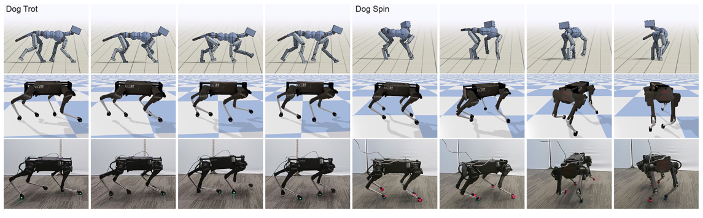
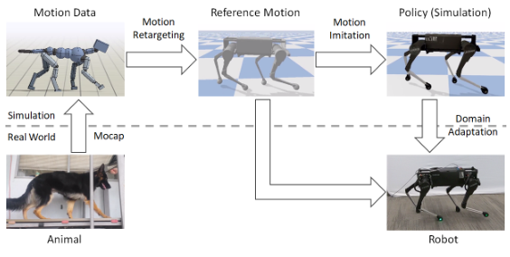
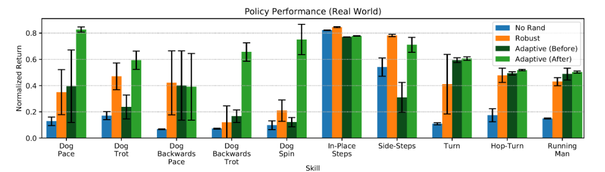
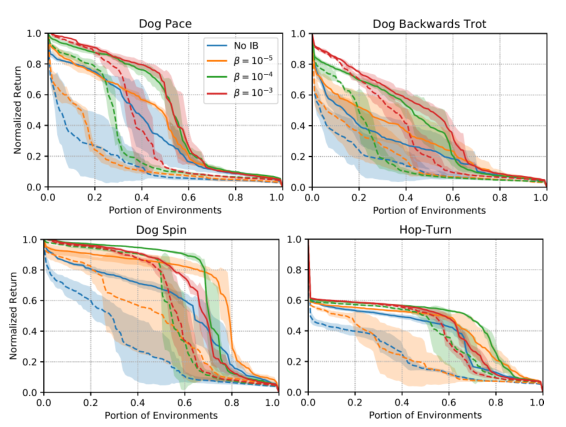

Background & Motivation
與其為每個步態手工設計控制器或獎勵函數,不如直接模仿動物:把真狗的 mocap 用 IK retarget 到 Laikago 四足機器人上,在模擬中以 RL + 動態隨機化學會追蹤參考動作,最後用資訊瓶頸正則化的 latent 動態編碼,在真實機器人上只花約 50 次試驗(每次 5~10 秒)就完成 sim-to-real 適應。同一套框架學會 pace、trot、spin、hop-turn 等多樣步態——換技能只要換一段參考動作。
Instead of hand-designing a controller or a reward function per gait, imitate the animal directly: retarget real-dog mocap onto the Laikago quadruped via IK, learn to track it in simulation with RL + dynamics randomization, then adapt to the physical robot by searching an information-bottlenecked latent dynamics encoding — about 50 real-world trials of 5–10 s each suffice. One framework yields pacing, trotting, spinning and hop-turns; switching skill means switching the reference clip.

如果只有 30 秒In 30 seconds
- 問題 — 四足機器人的敏捷步態長期依賴逐技能的手工控制器或逐技能的獎勵函數設計;RL 雖然自動,但學出的動作常不自然、且模擬訓練的策略搬上實機就跌倒(dynamics gap)。
- Problem — Agile quadruped gaits have long required per-skill hand-engineered controllers or per-skill reward design; RL automates this but produces unnatural motions, and sim-trained policies fall over on real hardware (the dynamics gap).
- 方法 — 三階段:IK retargeting(狗的骨架 → 機器人形態)→ 模擬中 RL 模仿(通用的動作追蹤獎勵,PPO,約 2 億樣本)→ latent 空間域適應:訓練時把隨機化的動態參數 \(\mu\) 編碼成 \(z\),測試時直接在真實機器人上搜尋最好的 \(z^*\)(AWR),不需微調任何網路權重。
- Method — Three stages: IK retargeting (dog skeleton → robot morphology) → RL imitation in simulation (a generic motion-tracking reward, PPO, ~200M samples) → latent-space domain adaptation: randomized dynamics parameters \(\mu\) are encoded into \(z\) during training; at deployment, search directly for the best \(z^*\) on the real robot (AWR), fine-tuning no network weights.
- 結果 — 真實 Laikago 學會 10 種技能;Dog Trot 達 1.08 m/s、倒退 trot 達 1.20 m/s,快過原廠最快步態的 0.84 m/s;在動態技能上,適應後回報大幅超越只靠 robust 訓練的策略(Dog Pace 0.35→0.83、Dog Spin 0.21→0.75)。
- Results — The real Laikago learns 10 skills; Dog Trot reaches 1.08 m/s and backwards trot 1.20 m/s, beating the fastest manufacturer gait at 0.84 m/s; on dynamic skills, adaptation lifts return far above robust-only training (Dog Pace 0.35→0.83, Dog Spin 0.21→0.75).
領域脈絡Field context
2020 年之前,四足機器人的高性能控制主要靠手工設計的模型式控制(MIT Cheetah 3 的 MPC、降階模型的軌跡最佳化)——效果好但每個行為都要專家投入大量工程。RL 路線上,Tan et al. 2018 靠精細的馬達建模讓 Minitaur 學會走路,Hwangbo et al. 2019 用學出的 actuator net 把技能轉移到 ANYmal——但兩者都為每個技能手工設計獎勵函數。
Before 2020, high-performance quadruped control mostly relied on hand-designed model-based control (MPC on MIT Cheetah 3, trajectory optimization over reduced-order models) — effective, but each behavior demands heavy expert engineering. On the RL side, Tan et al. 2018 got the Minitaur walking via careful motor modeling, and Hwangbo et al. 2019 transferred skills to ANYmal with a learned actuator net — but both hand-crafted a reward function per skill.
另一條線是動作模仿(motion imitation):第一作者 Peng 的 DeepMimic(2018)已證明在模擬中,RL + mocap 追蹤獎勵能學出高度雜技化的動作;但受限於 RL 的樣本複雜度與 sim-real 落差,這些能力遲遲沒有登上真實機器人。本文就是把 DeepMimic 這條線接上實體四足的作品——並用 Yu et al. 的 latent 空間轉移想法補上最後一哩。
The other thread is motion imitation: first author Peng himself showed with DeepMimic (2018) that in simulation, RL + a mocap-tracking reward learns highly acrobatic skills; but RL sample complexity and the sim-to-real gap meant those capabilities never reached real robots. This paper plugs the DeepMimic line into a physical quadruped — using the latent-space transfer idea of Yu et al. for the last mile.
這篇的核心賭注是:「參考動作」可以同時取代兩種昂貴的人工——控制器設計與獎勵設計。動物已經示範了什麼是可行且自然的動作,學習系統只需要「追蹤」而非「發明」。這個觀點日後成為 learning-based legged locomotion 的一條主幹路線。[導讀補充]
The core bet: a reference motion can replace two expensive kinds of manual labor at once — controller design and reward design. The animal has already demonstrated what is feasible and natural; the learning system only needs to track, not invent. This view later became a trunk line of learning-based legged locomotion. [guide note]
核心洞見 · KEY INSIGHTSKEY INSIGHTS
值得帶走的不是「機器狗會學狗走路」,而是底下這幾個設計決策:
The takeaway is not "a robot dog can walk like a dog" but these design decisions:
- 參考動作 = 通用獎勵。一條 mocap 片段 + 一個固定形式的追蹤獎勵,就能取代逐技能的獎勵工程;換技能只要換片段(甚至倒放 mocap 就得到倒退步態)。
- Reference motion = generic reward. One mocap clip + one fixed-form tracking reward replaces per-skill reward engineering; switching skills = switching clips (even playing mocap backwards yields backwards gaits).
- Sim-to-real = 穩健 + 可適應,缺一不可。域隨機化給「覆蓋面」,latent 編碼 \(z\) 給「可調旋鈕」;實機上只搜尋低維的 \(z\),不動網路權重——不需要在硬體上算梯度,幾十次 rollout 就夠。
- Sim-to-real = robust + adaptive, jointly. Domain randomization provides coverage; the latent code \(z\) provides a tunable knob. On hardware, only the low-dimensional \(z\) is searched, no weight updates — no gradients on the robot, a few dozen rollouts suffice.
- 資訊瓶頸是「穩健 vs 可適應」的旋鈕。對 \(I(M,Z)\) 加上界,迫使策略少依賴精確動態參數:\(\beta\) 大 → 適應前就穩但可調空間小;\(\beta\) 小 → 適應前脆弱但適應後進步大。\(\beta=10^{-4}\) 時,加了 IB 的策略在適應前後都優於不加 IB。
- The information bottleneck is the robustness-vs-adaptability dial. Upper-bounding \(I(M,Z)\) forces the policy not to over-rely on exact dynamics: large \(\beta\) → robust before adaptation but less tunable; small \(\beta\) → brittle before, big gains after. At \(\beta=10^{-4}\), IB-trained policies beat No-IB both before and after adaptation.
- 「樣本效率」指的是實機端。模擬裡每個技能仍要 約 2 億 PPO 樣本;省下的是真實世界的試驗數(約 50 次)。這個分工——模擬吃大量樣本、實機只做低維搜尋——是全文的工程精髓。
- "Sample efficient" refers to the real-world side. Each skill still consumes ~200M PPO samples in simulation; what is saved is real-world trials (~50). This division — simulation absorbs the samples, hardware only runs a low-dimensional search — is the engineering essence.
- 歷史定位:DeepMimic 上實機。本文是「模仿動物資料 → 真實四足」這條路線的根節點,後來的 AMP、RMA 式 latent 外參估計、乃至各種 learned locomotion 系統都以它為參照。[導讀補充]
- Historical role: DeepMimic on hardware. This is the root node of the "imitate animal data → real quadruped" line; later AMP, RMA-style latent-extrinsics estimation, and many learned locomotion systems trace back to it. [guide note]
Problem Diagnosis
現況 vs 痛點Status quo vs pain points
| 現有做法Existing approach | 它的痛點Its pain point |
|---|---|
| 手工控制器 / MPCHand-designed control / MPC (MIT Cheetah 3, SLIP, …) | 逐技能的漫長開發,需要對系統與該技能的深度專業;降階模型多半 task-specific,能力上限受設計者理解限制,動作仍遠不如動物流暢。Lengthy per-skill development demanding deep expertise in both the system and the skill; reduced-order models are task-specific, capability capped by designer understanding, motions still far less fluid than animals. |
| RL + 手工獎勵RL + manual rewards (Tan 2018, Hwangbo 2019) | 獎勵設計本身又是一輪逐技能的調參工程;RL 容易學出不自然、實機上危險或不可行的動作。Reward design is yet another per-skill tuning effort; RL tends toward unnatural behaviors that are dangerous or infeasible on hardware. |
| 模擬中的動作模仿Motion imitation in sim (DeepMimic, SFV) | 模擬裡能做出高難度雜技,但高樣本複雜度 + dynamics gap,能力沒登上真實機器人;實體機器人上的模仿多限於上半身、靜態平衡的動作。Acrobatics work in simulation, but high sample complexity + the dynamics gap kept them off real robots; robot-side imitation was mostly upper-body motions with static balance. |
| 域隨機化(單獨用)Domain randomization alone | 追求「一個策略吃遍所有動態」——但可能不存在同時適用所有環境的單一策略,且真實世界有未建模效應,robust 策略仍可能翻車。Seeks one strategy for all dynamics — but no single strategy may work everywhere, and unmodeled real-world effects can still topple a robust policy. |
核心問題:「能不能用一段動物動作 + 一套固定流程,自動生出能在真實四足機器人上執行的敏捷技能?」
The core question: "Can one animal motion clip + one fixed pipeline automatically produce agile skills that run on a real quadruped?"
Gap 表 — 誰缺什麼,本文怎麼補Gap table — who lacks what, and how this paper fills it
| 方法Method | 限制Limitation | 本文如何補上How this paper fills it |
|---|---|---|
| DeepMimic Peng et al. 2018 |
只在模擬;角色動力學理想化。Simulation only; idealized character dynamics. | 同款追蹤獎勵 + 域隨機化與 latent 適應,把整條管線搬上實體 Laikago。Same tracking reward + randomization and latent adaptation, carrying the pipeline onto the physical Laikago. |
| Tan et al. 2018 / Hwangbo et al. 2019 | 實機成功,但逐技能手工獎勵;行為多為常規步態。Real-robot success, but per-skill manual rewards; mostly conventional gaits. | mocap 片段取代獎勵設計,同一框架學 10 種技能(含 hop-turn、spin)。Mocap clips replace reward design; one framework learns 10 skills (incl. hop-turn, spin). |
| Yu et al. 2019 latent 轉移(雙足)latent transfer (biped) |
latent 搜尋已被提出,但行為多樣性與敏捷度有限,且 \(z\) 可能過擬合到精確動態。Latent search existed, but with limited skill diversity and agility, and \(z\) can overfit to exact dynamics. | 結合模仿 + 資訊瓶頸正則化 latent,行為庫更大、更動態,且適應前後都更穩。Combines imitation + an information bottleneck on the latent: a larger, more dynamic repertoire, stabler both before and after adaptation. |
注意本文的比較對象全是自己的消融(No Rand / Robust / Adaptive),沒有跟外部方法對打。它賣的不是「刷了誰的榜」,而是一條完整可行的路線:資料 → 模擬 → 實機。這在 2020 年是第一次有人把「模仿真動物」端到端做到實體四足上。
Note the baselines are all internal ablations (No Rand / Robust / Adaptive) — no external head-to-head. The paper sells not a leaderboard win but a complete working route: data → simulation → hardware. In 2020 this was the first end-to-end "imitate a real animal" system on a physical quadruped.
Core Method
三階段管線The three-stage pipeline

Stage 1 — IK Retargeting:跨形態的動作翻譯Stage 1 — IK retargeting: translating motion across morphologies
狗和 Laikago 的身體結構不同,不能直接抄關節角。作法:在狗身上指定 source keypoints(腳與髖的位置),在機器人身上指定對應 target keypoints,然後解一個逐幀的最佳化,讓機器人姿勢 \(q_t\) 追蹤 keypoints、同時用正則項把姿勢拉向預設姿勢 \(\bar q\):
A dog and the Laikago have different bodies, so joint angles cannot be copied. Instead: specify source keypoints on the dog (feet, hips) and corresponding targets on the robot, then solve a per-frame optimization that tracks keypoints while regularizing toward a default pose \(\bar q\):
\(\hat x_i(t)\) 是第 \(i\) 個 keypoint 在原始動作中的 3D 位置,\(x_i(q_t)\) 是機器人在姿勢 \(q_t\) 下的對應位置,\(W\) 是各關節的正則化權重(對角矩陣)。keypoints 的選取與 \(W\) 都是人工指定的——形態差距是靠這些先驗吸收的。
\(\hat x_i(t)\) is keypoint \(i\) in the source motion, \(x_i(q_t)\) its robot counterpart under pose \(q_t\), and \(W\) a diagonal per-joint regularization matrix. Both the keypoints and \(W\) are hand-specified — the morphology gap is absorbed by these priors.
Stage 2 — RL 模仿:一個獎勵追蹤所有技能Stage 2 — RL imitation: one reward tracks every skill
標準 RL 設定:最大化期望折扣回報 \(J(\pi)=\mathbb E_{\tau\sim p(\tau|\pi)}\big[\sum_{t=0}^{T-1}\gamma^t r_t\big]\)。策略是前饋網路 \(\pi(a_t|s_t,g_t)\),30 Hz 輸出各關節 PD 目標角(先過低通濾波再上機)。輸入設計很「實機導向」:
Standard RL: maximize the expected discounted return \(J(\pi)=\mathbb E_{\tau\sim p(\tau|\pi)}\big[\sum_{t=0}^{T-1}\gamma^t r_t\big]\). The policy is a feedforward net \(\pi(a_t|s_t,g_t)\) outputting per-joint PD targets at 30 Hz (low-pass filtered before hitting the robot). The input design is deliberately hardware-friendly:
- State \(s_t=(q_{t-2:t},\,a_{t-3:t-1})\):最近三個時刻的姿勢(IMU 的 roll/pitch/yaw + 各關節角)與最近三個動作。刻意不含 root 位置——實機上難以估計。
- State \(s_t=(q_{t-2:t},\,a_{t-3:t-1})\): the last three poses (IMU roll/pitch/yaw + joint rotations) and last three actions. Root position is deliberately excluded — it is hard to estimate on hardware.
- Goal \(g_t=(\hat q_{t+1},\hat q_{t+2},\hat q_{t+10},\hat q_{t+30})\):參考動作未來四個目標姿勢,橫跨約 1 秒——給策略「接下來要去哪」的預告。
- Goal \(g_t=(\hat q_{t+1},\hat q_{t+2},\hat q_{t+10},\hat q_{t+30})\): four future reference poses spanning ~1 s — a preview of where the motion is heading.
獎勵是固定權重的五項追蹤和(沿用 DeepMimic):
The reward is a fixed-weight sum of five tracking terms (as in DeepMimic):
每一項都是「誤差的指數核」,例如姿勢項 \(r^p_t=\exp\!\big[-5\sum_j\|\hat q^j_t-q^j_t\|^2\big]\)(joint 角度)、末端點項 \(r^e_t=\exp\!\big[-40\sum_e\|\hat x^e_t-x^e_t\|^2\big]\)(足端相對 root 的位置)、root 姿勢項 \(r^{rp}_t=\exp\!\big[-20\|\hat x^{root}_t-x^{root}_t\|^2-10\|\hat q^{root}_t-q^{root}_t\|^2\big]\),另有速度項 \(r^v_t\)、root 速度項 \(r^{rv}_t\)。同一組權重用於全部 10 個技能——這就是「不用逐技能設計獎勵」的具體意思。訓練:PPO、約 2 億樣本、每技能 3 個 seeds、PyBullet。
Each term is an exponentiated error kernel, e.g. pose \(r^p_t=\exp\!\big[-5\sum_j\|\hat q^j_t-q^j_t\|^2\big]\) (joint rotations), end-effector \(r^e_t=\exp\!\big[-40\sum_e\|\hat x^e_t-x^e_t\|^2\big]\) (foot positions relative to root), root pose \(r^{rp}_t=\exp\!\big[-20\|\hat x^{root}_t-x^{root}_t\|^2-10\|\hat q^{root}_t-q^{root}_t\|^2\big]\), plus velocity terms \(r^v_t,\,r^{rv}_t\). One weight set serves all 10 skills — this is what "no per-skill reward design" concretely means. Training: PPO, ~200M samples, 3 seeds per skill, PyBullet.
Stage 3 — Latent 空間域適應(本文的技術核心)Stage 3 — Latent-space domain adaptation (the technical core)
訓練時:每個 episode 先抽一組動態參數 \(\mu\sim p(\mu)\)(下表六項),再由隨機編碼器 \(E(z|\mu)=\mathcal N(m(\mu),\Sigma(\mu))\) 編成 latent \(z\),供給策略 \(\pi(a|s,g,z)\)。這讓策略學會「在不同動態下該用哪種行為變體」。
During training: each episode samples dynamics parameters \(\mu\sim p(\mu)\) (six kinds, table below), which a stochastic encoder \(E(z|\mu)=\mathcal N(m(\mu),\Sigma(\mu))\) maps to a latent \(z\) fed to the policy \(\pi(a|s,g,z)\). The policy thus learns which behavior variant suits which dynamics.
| 隨機化參數Randomized param | 訓練範圍Train range | 測試範圍(更廣)Test range (wider) |
|---|---|---|
| 質量Mass | [0.8, 1.2]× | [0.5, 2.0]× |
| 慣量Inertia | [0.5, 1.5]× | [0.4, 1.6]× |
| 馬達強度Motor strength | [0.8, 1.2]× | [0.7, 1.3]× |
| 馬達摩擦Motor friction | [0, 0.05] Nms/rad | [0, 0.075] Nms/rad |
| 延遲Latency | [0, 0.04] s | [0, 0.05] s |
| 側向摩擦Lateral friction | [0.05, 1.25] Ns/m | [0.04, 1.35] Ns/m |
資訊瓶頸:若 \(z\) 把 \(\mu\) 編得太精確,策略會過擬合到「每組動態的專屬打法」,而真實世界根本沒有哪個 \(\mu\) 是準的。因此對 \(I(M,Z)\) 加上界,實作上用 KL 到單位高斯先驗 \(\rho(z)=\mathcal N(0,I)\) 的變分上界,化成軟約束:
Information bottleneck: if \(z\) encodes \(\mu\) too precisely, the policy overfits a bespoke strategy to each dynamics setting — and no \(\mu\) exactly matches the real world anyway. So the mutual information \(I(M,Z)\) is upper-bounded, implemented as a variational bound via the KL to a unit-Gaussian prior \(\rho(z)=\mathcal N(0,I)\), relaxed into a soft constraint:
\(\beta\) 是 Lagrange 乘子:\(\beta\!\to\!\infty\) 得到完全不看動態參數的 robust 策略;\(\beta\!\to\!0\) 則策略對 \(\mu\) 無限制取用、變得脆弱。實驗選 \(\beta=10^{-4}\)。編碼器與策略用 reparameterization trick 端到端一起訓。
\(\beta\) is a Lagrange multiplier: \(\beta\!\to\!\infty\) yields a robust policy that ignores dynamics parameters; \(\beta\!\to\!0\) gives unfettered access to \(\mu\) and brittle strategies. Experiments use \(\beta=10^{-4}\). Encoder and policy are trained end-to-end via the reparameterization trick.
實機轉移:真實世界的 \(\mu\) 未知,乾脆跳過它——直接在 latent 空間搜尋讓實機回報最大的編碼:
Real-world transfer: the true \(\mu\) is unknown, so skip it — search the latent space directly for the encoding that maximizes return on the physical system:
用 AWR(advantage-weighted regression):從先驗 \(\omega_0=\mathcal N(0,I)\) 出發,每輪抽 \(z_k\)、跑一個 episode 記回報 \(R_k\),然後把搜尋分佈往「回報高於平均的樣本」加權更新(權重 \(\exp\!\big[\tfrac1\alpha(R_i-\bar v)\big]\))。作者發現解析解容易過早收斂,改用幾步梯度下降做增量更新。約 50 次實機試驗(每次 5~10 秒)即可——全程不需要在硬體上算策略梯度。
This uses AWR (advantage-weighted regression): start from the prior \(\omega_0=\mathcal N(0,I)\); each iteration samples \(z_k\), runs one episode, records return \(R_k\), and reweights the search distribution toward above-average samples (weight \(\exp\!\big[\tfrac1\alpha(R_i-\bar v)\big]\)). The analytic update converges prematurely, so a few gradient steps are used instead. About 50 real trials of 5–10 s each suffice — no policy gradients ever computed on hardware.
符號白話對照Symbols in plain words
| \(\hat q_t,\ \hat x^e_t\) | 參考動作在時刻 \(t\) 的目標姿勢 / 目標足端位置(retargeting 的輸出,^ 代表「參考值」)。Reference pose / end-effector target at time \(t\) (output of retargeting; the hat means "reference"). |
| \(s_t,\ g_t,\ a_t\) | 狀態(近三步姿勢+動作)、目標(未來 4 個參考姿勢)、動作(各關節 PD 目標角)。State (last three poses+actions), goal (four future reference poses), action (per-joint PD targets). |
| \(\mu\) | 模擬動態參數(質量、摩擦、延遲…),訓練時每 episode 隨機抽;真實世界的 \(\mu\) 不可知。Simulator dynamics parameters (mass, friction, latency, …), resampled each training episode; unknown in the real world. |
| \(E(z|\mu)\) | 隨機編碼器:把 \(\mu\) 壓成 latent 高斯分佈;策略只透過 \(z\) 認識動態。Stochastic encoder squeezing \(\mu\) into a Gaussian over latents; the policy senses dynamics only through \(z\). |
| \(\beta,\ \rho(z)\) | 資訊瓶頸強度(KL 懲罰係數)與先驗 \(\mathcal N(0,I)\);\(\beta\) 越大 \(z\) 攜帶的動態資訊越少。Bottleneck strength (KL penalty) and the prior \(\mathcal N(0,I)\); larger \(\beta\) = less dynamics information in \(z\). |
| \(\omega_k(z),\ \alpha\) | 實機上第 \(k\) 輪的 latent 搜尋分佈,與 AWR 的溫度(\(\alpha=0.01\))。The latent search distribution at hardware iteration \(k\), and the AWR temperature (\(\alpha=0.01\)). |
| \(z^{*}\) | 最終部署用的編碼:搜尋分佈收斂後取其平均。The deployed encoding: the mean of the converged search distribution. |
Experimental Evidence
學到什麼技能?多快?Which skills, and how fast?
10 種技能:5 種來自真狗 mocap(Dog Pace / Trot / Backwards Pace / Backwards Trot / Spin),5 種來自美術動畫(In-Place Steps / Side-Steps / Turn / Hop-Turn / Running Man)。Dog Trot 實測 1.08 m/s、倒退 trot 1.20 m/s,均快過原廠控制器最快的 0.84 m/s;Hop-Turn 是空中完成 90° 轉身的高動態動作。把 mocap 倒放就能學出倒退步態——展示了「換片段=換技能」的便利。
Ten skills: five from real-dog mocap (Dog Pace / Trot / Backwards Pace / Backwards Trot / Spin) and five from artist animations (In-Place Steps / Side-Steps / Turn / Hop-Turn / Running Man). Dog Trot reaches 1.08 m/s and backwards trot 1.20 m/s, both beating the fastest manufacturer gait at 0.84 m/s; Hop-Turn performs a 90° turn midair. Playing mocap backwards yields backwards gaits — "swap the clip, swap the skill."
失敗案例也誠實給出:Running Man(向後移動卻做向前走的動作)學不像——策略讓腳貼地向後蹭,而不是抬腳踏步。
A failure case is honestly reported: Running Man (moving backwards with a forward-walking motion) is not reproduced — the policy shuffles backwards with feet on the ground instead of stepping.
主結果表 — 實機正規化回報(Table IV,0~1)Main results — real-world normalized return (Table IV, 0–1)
| 技能Skill | No Rand | Robust | Adaptive(適應前)Adaptive (before) | Adaptive(適應後)Adaptive (after) |
|---|---|---|---|---|
| Dog Pace | 0.128 | 0.350 | 0.395 | 0.827 |
| Dog Trot | 0.171 | 0.471 | 0.237 | 0.593 |
| Dog Backwards Pace | 0.067 | 0.421 | 0.401 | 0.390 |
| Dog Backwards Trot | 0.072 | 0.120 | 0.167 | 0.656 |
| Dog Spin | 0.098 | 0.209 | 0.121 | 0.751 |
| In-Place Steps | 0.822 | 0.845 | 0.771 | 0.778 |
| Side-Steps | 0.541 | 0.782 | 0.310 | 0.710 |
| Turn | 0.108 | 0.410 | 0.594 | 0.606 |
| Hop-Turn | 0.174 | 0.478 | 0.493 | 0.518 |
| Running Man | 0.149 | 0.430 | 0.488 | 0.503 |
讀法:No Rand 幾乎全軍覆沒(不隨機化就上不了實機);動態技能(Pace、Spin、Backwards Trot)靠適應才能成立,增幅 2~5 倍;但簡單技能(In-Place / Side-Steps)Robust 反而略勝,Backwards Pace 的適應甚至沒有幫助——適應不是萬靈丹。每格為 3 seeds × 5 episodes 的平均。
How to read: No Rand collapses almost everywhere (no randomization = no transfer); dynamic skills (Pace, Spin, Backwards Trot) only work after adaptation, gaining 2–5×; but on simple skills (In-Place / Side-Steps) Robust actually edges ahead, and adaptation does not help Backwards Pace at all — adaptation is no panacea. Each cell averages 3 seeds × 5 episodes.

消融解讀Reading the ablations
| 拿掉什麼Removed | 代價Cost | 證明了什麼What it proves |
|---|---|---|
| 域隨機化(No Rand)Randomization (No Rand) | 實機幾乎全滅(0.07~0.17)Near-total real-world failure (0.07–0.17) | dynamics gap 是主要死因;模擬分數(≈0.6~0.9)完全騙人。The dynamics gap is the killer; sim scores (≈0.6–0.9) are utterly misleading. |
| 適應(只留 Robust)Adaptation (Robust only) | 動態技能掉 2~5 倍2–5× drop on dynamic skills | 「一招打天下」的策略保守到做不出高動態動作;OOD 模擬測試同樣領先(Dog Pace:回報>0.6 的環境 50% vs 38%)。One-size-fits-all policies are too conservative for dynamic skills; adaptive also leads in OOD sim tests (Dog Pace: return >0.6 in 50% vs 38% of envs). |
| 資訊瓶頸(No IB)The bottleneck (No IB) | 適應前後皆較差Worse both before and after | 限制 \(z\) 的資訊量同時買到穩健與可適應;\(\beta\) 掃描顯示明確的 trade-off(大 \(\beta\)=穩、小 \(\beta\)=可調),\(\beta=10^{-4}\) 最平衡。Capping the information in \(z\) buys robustness and adaptability together; the \(\beta\) sweep shows a clean trade-off (large \(\beta\)=robust, small \(\beta\)=tunable), with \(\beta=10^{-4}\) best balanced. |

另外:適應的學習曲線顯示多數環境在幾十個 episodes 內收斂;跌倒時間統計(Fig.7/11)顯示適應後的策略常撐滿整個 episode 不跌倒。
Also: adaptation learning curves show convergence within a few dozen episodes in most environments; time-before-fall stats (Fig.7/11) show adapted policies often survive the full episode.
實驗證明了什麼、沒證明什麼What the experiments do and do not prove
證明了:模仿 + 隨機化 + latent 適應能把多樣、超越原廠速度的步態搬上真實 Laikago;適應對動態技能是必要的;IB 正則化在前後兩端都有淨收益。
沒證明:沒有與任何外部方法(SysID、meta-learning、直接 finetune)對比;沒有地形、負載、戶外等真實變因;「敏捷」上限止於 hop-turn——大跳躍與奔跑仍做不到(作者自承)。
Proven: imitation + randomization + latent adaptation puts diverse, faster-than-manufacturer gaits on a real Laikago; adaptation is necessary for dynamic skills; IB regularization nets gains on both ends.
Not proven: no comparison against any external method (SysID, meta-learning, direct fine-tuning); no terrain, payload, or outdoor variation; agility tops out at hop-turn — big jumps and running remain out of reach (authors admit).
Critical Reading
可被質疑的點Contestable points
- 基線全是自家消融。論文引用了 finetuning、meta-learning(MAML、\(\mathrm{RL}^2\))、SysID 等替代適應路線,卻沒有和其中任何一個做實驗對比。「latent 搜尋比較好」是論述出來的,不是量測出來的;甚至沒和「AWR 換成 CMA-ES / 隨機搜尋」比,無法確認 AWR 本身的貢獻。
- All baselines are in-house ablations. The paper cites fine-tuning, meta-learning (MAML, \(\mathrm{RL}^2\)) and SysID as alternative adaptation routes, yet compares experimentally against none of them. "Latent search is better" is argued, not measured; there is not even a comparison of AWR vs CMA-ES / random search within the same latent space, so the contribution of AWR itself is unverified.
- 實機適應的真實成本被輕描淡寫。50 次試驗聽起來便宜,但其中包含大量跌倒(Fig.7 的 robust 策略常在數秒內倒)、每次人工復位、硬體磨損;而且計算回報需要追蹤參考動作的誤差——實機上如何量測 root 位置/姿態(是否用外部 mocap 系統)論文沒有交代,這是重現該工作的實際門檻。
- The true cost of hardware adaptation is understated. Fifty trials sound cheap, but they include many falls (robust policies topple within seconds in Fig.7), manual resets, and hardware wear; moreover the return requires measuring tracking error against the reference — how root pose is measured on hardware (an external mocap system?) is never specified, a real barrier to reproduction.
- 統計太薄。3 seeds × 5 episodes,多格標準差 ±0.1~0.28;Dog Backwards Pace 上 Robust(0.421)、Before(0.401)、After(0.390)根本無法區分。「adaptive 在多數技能上勝出」的主張,在幾個技能上落在雜訊裡。
- Thin statistics. 3 seeds × 5 episodes, std devs of ±0.1–0.28 in many cells; on Dog Backwards Pace, Robust (0.421), Before (0.401) and After (0.390) are indistinguishable. The claim "adaptive wins on most skills" sits inside the noise for several skills.
- 「不用設計獎勵」只對了一半。獎勵形式固定,但那組指數核係數(5、40、20/10、0.5/0.05/0.2/0.15/0.1)仍是一次性的人工調參,retargeting 的 keypoints 與 \(W\) 也是。人工先驗沒有消失,只是從「每技能一次」攤成「每框架一次」。
- "No reward design" is half-true. The reward form is fixed, but its kernel coefficients (5, 40, 20/10, 0.5/0.05/0.2/0.15/0.1) were still hand-tuned once, as were the retargeting keypoints and \(W\). Manual priors did not vanish; they amortized from per-skill to per-framework.
- 一技能一策略、一技能一次適應。沒有多技能共用策略,也沒展示同一個 \(z^*\) 能否跨技能共用;每學一招都要 2 億模擬樣本 + 50 次實機試驗。「技能庫隨資料 scale」目前只是願景。
- One skill = one policy = one adaptation run. No multi-skill policy, and no evidence a single \(z^*\) transfers across skills; each new skill costs 200M sim samples + 50 hardware trials. "Skill libraries scale with data" remains a vision, not a result.
- 環境單一。平坦室內地面、無地形、無外部擾動、無感知;\(z\) 適應的是「這一天、這顆電池、這塊地板」的動態——環境一變是否要重新適應,論文未測。
- A single environment. Flat indoor ground, no terrain, no perturbations, no perception; \(z\) adapts to the dynamics of this day, this battery, this floor — whether a changed environment demands re-adaptation is untested.
- 與原廠的速度比較不對等。1.08 vs 0.84 m/s 的對照裡,原廠控制器優化的目標(穩定、安全、通用)和模仿策略(單一步態的追蹤)不同;用「更快」證明「更敏捷」有偷換概念的成分,且學到的行為穩定性不如最好的手工控制器(作者自承)。
- The manufacturer speed comparison is apples-to-oranges. In 1.08 vs 0.84 m/s, the stock controller optimizes stability, safety and generality, not top speed; using "faster" as proof of "more agile" smuggles the conclusion — and the learned behaviors are less stable than the best hand-designed controllers (authors admit).
給讀書會 / 審稿的犀利問題Sharp questions for a reading group / review
- Q1 適應方法的對照:同樣 50 次試驗預算,拿去做隨機搜尋 / CMA-ES / 少步 finetune 最後一層,會不會一樣好?AWR 與 latent 結構各貢獻多少?
- Q1 Adaptation baselines: with the same 50-trial budget, would random search / CMA-ES / few-step last-layer fine-tuning do just as well? How much is AWR vs the latent structure itself?
- Q2 實機量測:實機回報中的 root 位置與姿態誤差是怎麼量的?若需要實驗室級 mocap 設備,「50 次試驗很省」的實務意義就要打折。
- Q2 Hardware measurement: how are root position/orientation errors measured for the real-world return? If a lab mocap rig is required, the practical value of "only 50 trials" shrinks.
- Q3 顯著性:±0.25 級的標準差下,Backwards Pace、In-Place、Side-Steps 的方法排序還可信嗎?若跑 10 seeds,「adaptive 多數勝出」還成立嗎?
- Q3 Significance: with ±0.25-level std devs, are the method rankings on Backwards Pace, In-Place and Side-Steps trustworthy? Would "adaptive mostly wins" survive 10 seeds?
- Q4 \(z\) 到底編了什麼:latent 維度多大?\(z^*\) 是否對應可解讀的物理量(延遲?摩擦?)?同一技能在不同日子搜到的 \(z^*\) 一致嗎?這決定它是「系統辨識的壓縮版」還是「行為風格開關」。
- Q4 What does \(z\) actually encode: what is its dimension? Does \(z^*\) map to interpretable physics (latency? friction?)? Is \(z^*\) consistent across days for the same skill? This decides whether it is compressed system identification or a behavior-style switch.
- Q5 上限在哪:作者說大跳躍與奔跑做不到是「硬體與演算法限制」——具體卡在哪?馬達扭矩?PD 頻寬?還是 mocap 裡的動態超出 \(z\) 空間能補償的範圍?
- Q5 Where is the ceiling: the authors blame "hardware and algorithmic limitations" for missing jumps and runs — what binds, concretely? Motor torque? PD bandwidth? Or dynamics in the mocap beyond what the \(z\) space can compensate?
Takeaways
對你研究的啟發Implications for your research
- 可複用的 sim-to-real 配方:「隨機化參數 → 編碼成 latent → 策略以 latent 為條件 → 實機上黑箱搜尋 latent」。任何有模擬器、有硬體、怕在硬體上做梯度更新的任務(操作、無人機、外骨骼)都能套。
- A reusable sim-to-real recipe: randomize parameters → encode into a latent → condition the policy on it → black-box-search the latent on hardware. Applicable to any task with a simulator, hardware, and a fear of on-hardware gradient updates (manipulation, drones, exoskeletons).
- 示範資料是最便宜的獎勵函數。當行為「長什麼樣」比「達成什麼指標」更好定義時,追蹤獎勵 + 參考資料勝過手工 shaping——這個原則後來擴散到人形機器人與操作(把 mocap 換成人類影片/遙操作示範)。[導讀補充]
- Demonstration data is the cheapest reward function. When "what the behavior looks like" is easier to define than "what metric it achieves," tracking rewards + reference data beat manual shaping — a principle that later spread to humanoids and manipulation (swap mocap for human video / teleop demos). [guide note]
- 資訊瓶頸當設計旋鈕,不只是正則化。「策略可以依賴多少特權資訊」在這裡變成一個可掃描、可視化的超參數 \(\beta\)。任何 teacher-student / privileged-learning 設計都值得借這個透鏡。
- The information bottleneck as a design dial, not just regularization. "How much privileged information may the policy depend on" becomes a sweepable, plottable hyperparameter \(\beta\). Any teacher-student / privileged-learning design can borrow this lens.
- 報告你的失敗格。本文的可信度有一大半來自那些對自己不利的數字(Robust 贏兩格、Backwards Pace 適應無效)。寫系統論文時照做。
- Report your losing cells. Much of this paper's credibility comes from the unfavorable numbers it keeps (Robust wins two rows; adaptation fails on Backwards Pace). Do the same in systems papers.
歷史位置:這條家譜的根Historical position: root of a lineage
本文是「learning-based 四足運動」的根節點之一,往後看得到三條支線:[導讀補充]
This paper is a root node of learning-based quadruped locomotion; three branches grow out of it: [guide note]
| 後續工作Later work | 與本文的關係Relation to this paper |
|---|---|
| RMA Kumar et al. 2021 | 同樣「把動態編碼成 latent 外參 \(z\)」,但把實機上的 50 次搜尋換成一個從本體感受歷史即時回歸 \(z\) 的 adaptation module——零試驗、毫秒級適應。可視為本文第三階段的「線上化」。Also encodes dynamics into a latent extrinsics vector \(z\), but replaces the 50-trial on-robot search with an adaptation module regressing \(z\) online from proprioceptive history — zero trials, millisecond adaptation. Effectively an "online-ization" of Stage 3 here. |
| Walk These Ways Margolis & Agrawal 2022 | 不模仿動物,改用行為參數(步頻、步高、步態相位)條件化一個策略,一樣是「低維旋鈕索引一族行為」的思想,但旋鈕變成人可直接指定的語義參數。Skips animal imitation; conditions one policy on behavior parameters (cadence, foot height, gait phase) — the same "low-dimensional knob indexes a behavior family" idea, with the knob now human-interpretable. |
| DreamWaQ Nahrendra et al. 2023 | 把「環境資訊壓進 latent」推進成從觀測歷史隱式估計(VAE 式 context estimator),不再需要顯式 \(\mu\) 列表——本文 encoder 思想的感知化版本。Pushes "compress environment into a latent" to implicit estimation from observation history (a VAE-style context estimator), dropping the explicit \(\mu\) list — a perceptual descendant of the encoder here. |
| AMP / 影片模仿 Peng et al. 2021+ | 把「逐幀追蹤獎勵」換成對抗式動作先驗,解掉 phase 對齊的僵硬;並朝作者在結論許的願——從影片學動作——前進。也與 imitation learning 各線(行為複製、遙操作示範)概念相通。Replaces per-frame tracking with an adversarial motion prior, removing rigid phase alignment; and advances the paper's own closing wish — learning from video. Conceptually adjacent to the broader imitation-learning threads (behavior cloning, teleop demos). |
值得引用的點What is worth citing
| 當你要主張…When you claim… | 就引這篇Cite this for |
|---|---|
| 「參考動作可取代逐技能獎勵工程」"Reference motions can replace per-skill reward engineering" | 實體四足上的第一個系統性正例(10 技能、同一框架)。The first systematic positive example on a physical quadruped (10 skills, one framework). |
| 「latent 空間搜尋是實用的 sim-to-real 適應法」"Latent-space search is a practical sim-to-real adaptation method" | 引它的三欄消融(No Rand / Robust / Adaptive)與 ~50 trials 的成本數字。Cite the three-column ablation (No Rand / Robust / Adaptive) and the ~50-trial cost figure. |
| 「資訊瓶頸能同時買到穩健與可適應」"An information bottleneck buys robustness and adaptability together" | 引 \(\beta\) 掃描(Fig.10)與 IB vs No-IB 的前後對比。Cite the \(\beta\) sweep (Fig.10) and the IB vs No-IB before/after contrast. |
這篇把「機器人技能的來源」從工程師的手改成動物的身體:mocap 當獎勵、模擬吃樣本、實機只轉一顆 latent 旋鈕。它的敏捷度天花板不高,但它立下的「示範資料 + 隨機化 + latent 適應」配方,成了此後五年 learning-based legged locomotion 反覆引用與改造的起點。
This paper moves the source of robot skills from the engineer's hands to the animal's body: mocap as the reward, simulation absorbing the samples, hardware only turning one latent knob. Its agility ceiling is modest, but its recipe — demonstrations + randomization + latent adaptation — became the starting point that learning-based legged locomotion kept citing and remixing for the next five years.